Introduction
The General Lake Model (GLM)
The General Lake Model (GLM) is a one-dimensional (1-D), variable-layer hydrodynamic model for lakes, reservoirs, and estuaries. Originally described by Hipsey et al. (2019), GLM simulates the vertical profiles of temperature, salinity, and density driven by surface heat exchange, shortwave radiation, wind mixing, inflows, and outflows. Its key architectural features include:
- Variable-thickness layer scheme — layers merge and split dynamically, giving high resolution where it is needed (near the thermocline) and coarser resolution elsewhere.
- Flexible inflow/outflow — supports multiple rivers, surface spillways, and subsurface outlets at arbitrary elevations.
- Rich surface heat-flux options — sensible heat, latent heat, longwave, and shortwave radiation computed from standard meteorological inputs.
- Sediment heat exchange — allows depth-varying bed temperatures to drive conductive heat flux into the water column.
There is more detailed GLM documentation available from the GLM website,
Source code: :github: https://github.com/AquaticEcoDynamics/GLM/tree/master
Binaries: :github: https://github.com/AquaticEcoDynamics/Binaries
References
Hipsey, M.R., Bruce, L.C., Boon, C., Busch, B., Carey, C.C., Hamilton, D.P., Hanson, P.C., Read, J.S., de Sousa, E., Weber, M. & Winslow, L.A. (2019). A General Lake Model (GLM 3.0) for linking with high-frequency sensor data from the Global Lake Ecological Observatory Network (GLEON). Geoscientific Model Development, 12, 473–523. https://doi.org/10.5194/gmd-12-473-2019
The Aquatic Ecosystem Dynamics (AED) library
The Aquatic Ecodynamics (AED) library (Hipsey et al., 2013) is a modular biogeochemical modelling framework designed to be coupled with hydrodynamic models such as GLM. Each biogeochemical process is implemented as a self-contained module that can be switched on or off independently, making it easy to build simulations that range from simple oxygen tracking through to full nutrient–phytoplankton–zooplankton food-web dynamics.
There is a detailed AED manual available from the AED website, but here we provide a brief overview of the key modules relevant for GLM-AED.
AED modules available in AEME
| Module | AED name | Description |
|---|---|---|
| Sediment flux | aed_sedflux |
Sediment–water interface exchange of O2, nutrients, and silica. Supports constant, constant-2D (depth-zone-specific), and dynamic flux models. |
| Oxygen | aed_oxygen |
Dissolved-oxygen dynamics including reaeration, sediment oxygen demand (SOD), and photosynthesis/respiration coupling. |
| Silica | aed_silica |
Reactive silica cycling — important for diatom growth. |
| Nitrogen | aed_nitrogen |
Full dissolved inorganic nitrogen cycle: ammonium (NH4+), nitrite (NO2−), nitrate (NO3−), N2O; nitrification, denitrification, N-fixation. |
| Phosphorus | aed_phosphorus |
Dissolved reactive phosphorus (DRP / FRP) including redox-sensitive sediment release. |
| Organic matter | aed_organic_matter |
Particulate and dissolved organic carbon (POC/DOC) and organic nitrogen and phosphorus pools; mineralisation, decomposition. |
| Phytoplankton | aed_phytoplankton |
Multi-group phytoplankton dynamics: growth, respiration, nutrient uptake, light limitation, settling, mortality. Default groups: cyanobacteria, green algae, diatoms. |
| Zooplankton | aed_zooplankton |
Zooplankton grazing and dynamics. |
| Macrophytes | aed_macrophyte |
Submerged and emergent macrophyte dynamics. |
| Totals | aed_totals |
Diagnostic aggregates: TN, TP, TOC, chlorophyll-a. |
GLM-AED Parameter Library
The glm_aed_parameter_library dataset provides a
comprehensive list of all parameters used in the GLM-AED configuration,
including their default values, units, and typical ranges. This library
serves as a reference for users to understand the parameters governing
the model behaviour and to guide parameterisation for specific
applications. It also includes metadata such as the associated AED
module and a brief description of each parameter’s role in the model and
a web source link for further information.
Getting started
We will use the example lake dataset bundled with the AEME package throughout this vignette.
aeme_file <- system.file("extdata/aeme.rds", package = "AEME")
aeme <- readRDS(aeme_file)
aeme#> #> ── AEME ──────────────────────────────────────────────────────────────────────── #> #> ── Lake ── #> #> Wainamu (ID: 45819) #> • Lat: -36.89; Lon: 174.47 #> • Elev: 23.64m; Depth: 13.07m; Area: 152343 m2 #> #> ── Time ── #> #> • Start: 2020-08-01; Stop: 2021-06-30; Time step: 3600 #> • Spin up (days): GLM: 2; GOTM: 1; DYRESM: 1 #> #> ── Configuration ── #> #> • Model: #> • Path: Not set #> • Model controls: Absent #> • Use biogeochemical model: No #> ┌ Model Configuration ─────────────────────────────────────────┐ #> │ Model Physical Biogeochemical │ #> │ --- │ #> │ DY-CD Absent Absent │ #> │ GLM-AED Absent Absent │ #> │ GOTM-WET Absent Absent │ #> └──────────────────────────────────────────────────────────────┘ #> #> ── Observations ── #> #> • Lake: Present; Level: Present #> #> ── Input ── #> #> • Initial profile: Absent; Initial depth: 13.07m #> • Hypsograph: Present (n=132) #> • Meteo: Present; Use longwave: TRUE; Kw: 1.31 #> #> ── Inflows ── #> #> • Number of inflows: 1; Names: FWMT #> • Scaling factors: DY-CD: 1; GLM-AED: 1; GOTM-WET: 1 #> #> ── Outflows ── #> #> • Data: Present #> • Scaling factors: DY-CD: 1; GLM-AED: 1; GOTM-WET: 1 #> #> ── Water Balance ── #> #> • Method: 2; Use: obs #> • Modelled: Absent; Water balance: Absent #> #> ── Parameters ── #> #> • Number of parameters: 0 #> #> ── Output ── #> #> • DY-CD: 0 #> • GLM-AED: 0 #> • GOTM-WET: 0 #> • Variables: 0 #> None
Building a GLM-AED simulation
Model controls
get_model_controls() returns a data frame that governs
which biogeochemical variables are simulated and how they are
initialised. Pass use_bgc = TRUE to enable the full suite
of water-quality variables.
model_controls <- get_model_controls(use_bgc = TRUE)
head(model_controls)
#> var_aeme simulate inf_default initial_wc initial_sed conversion_aed
#> 1 CAR_doc TRUE 0 0.5 1e+06 0.012011
#> 2 CAR_pH TRUE 7 7.0 7e+00 1.000000
#> 3 CAR_poc TRUE 0 0.2 1e-01 0.012011
#> 4 CHM_oxy TRUE 10 10.0 1e+01 0.032000
#> 5 CHM_oxycln TRUE NA NA NA NA
#> 6 CHM_oxyepi TRUE NA NA NA NAYou can narrow the set of simulated variables using
set_vars_sim():
vars_sim <- c(
"HYD_strat", # stratification flag
"HYD_temp", # water temperature
"HYD_thmcln", # thermocline depth
"CHM_oxy", # dissolved oxygen
"CHM_oxycln", # oxycline depth
"NIT_amm", # ammonium
"NIT_nit", # nitrate
"NIT_tn", # total nitrogen
"PHS_frp", # filterable reactive phosphorus
"PHS_tp", # total phosphorus
"PHY_tchla" # total chlorophyll-a
)
model_controls <- set_vars_sim(
model_controls = model_controls,
vars_sim = vars_sim
)Build the model
We will build the model in a directory called aeme,
path <- "aeme"build_aeme() translates the AEME object into all
configuration files required by GLM-AED. Setting
use_bgc = TRUE writes the aed/aed.nml file and
supporting CSV parameter files for phytoplankton, zooplankton, and
macrophytes.
model <- "glm_aed"
aeme <- build_aeme(
aeme = aeme,
model = model,
path = path,
model_controls = model_controls,
ext_elev = 3,
use_bgc = TRUE
)
#>
#> Tier 2: zone-median summer concentrations used for adjustment:
#> oxy amm nit frp
#> Zone1 0.075 0.078 0.010 0.004
#> Zone2 7.160 0.005 0.001 0.002
#>
#> === Sediment zone flux estimates (obs_adjusted) ===
#> n_zones: 2 | max lake depth: 13.07 m | ref_depth: 5 m
#>
#> zone height_lower_m height_upper_m depth_upper_m depth_lower_m mean_depth_m
#> 1 0.00 3.07 10 13.1 11.5
#> 2 3.07 17.00 0 10.0 5.0
#> area_m2 area_frac fsed_oxy fsed_amm fsed_nit fsed_frp
#> 43957 0.289 -38.8 5.835 -0.4 0.1035
#> 108386 0.711 -19.4 0.512 0.1 0.0259
#>
#> Lake-wide area-weighted average fluxes (for sanity check):
#> oxy amm nit frp
#> -25.007 2.050 -0.044 0.048The configuration files are stored in the configuration
slot of the aeme object. For GLM-AED the slot contains the
parsed glm3.nml and aed/aed.nml:
cfg <- configuration(aeme)
names(cfg[["glm_aed"]])
#> [1] "hydrodynamic" "bgc"GLM-AED specific features
Selecting AED biogeochemical modules
By default, all AED modules are enabled.
set_glm_aed_models() lets you choose a subset — for
example, running hydrodynamics coupled with oxygen and nutrient cycling
only, without phytoplankton or zooplankton:
# Rebuild first so we have a clean state
aeme <- build_aeme(
aeme = aeme,
model = model,
model_controls = model_controls,
path = path,
ext_elev = 5,
use_bgc = TRUE
)
#>
#> Tier 2: zone-median summer concentrations used for adjustment:
#> oxy amm nit frp
#> Zone1 0.075 0.078 0.010 0.004
#> Zone2 7.160 0.005 0.001 0.002
#>
#> === Sediment zone flux estimates (obs_adjusted) ===
#> n_zones: 2 | max lake depth: 13.07 m | ref_depth: 5 m
#>
#> zone height_lower_m height_upper_m depth_upper_m depth_lower_m mean_depth_m
#> 1 0.00 3.07 10 13.1 11.5
#> 2 3.07 22.00 0 10.0 5.0
#> area_m2 area_frac fsed_oxy fsed_amm fsed_nit fsed_frp
#> 43957 0.289 -38.8 5.835 -0.4 0.1035
#> 108386 0.711 -19.4 0.512 0.1 0.0259
#>
#> Lake-wide area-weighted average fluxes (for sanity check):
#> oxy amm nit frp
#> -25.007 2.050 -0.044 0.048
# Switch on all available modules (the default)
aeme <- set_glm_aed_models(
aeme = aeme,
path = path,
aed_models = c(
"aed_sedflux",
"aed_oxygen",
"aed_silica",
"aed_nitrogen",
"aed_phosphorus",
"aed_organic_matter",
"aed_phytoplankton",
"aed_zooplankton",
"aed_macrophyte",
"aed_totals"
)
)To run a minimal simulation with only oxygen and nutrient cycling:
aeme <- set_glm_aed_models(
aeme = aeme,
path = path,
aed_models = c(
"aed_sedflux",
"aed_oxygen",
"aed_nitrogen",
"aed_phosphorus"
)
)Sediment zones
One of the most important GLM-AED features for water-quality
simulation is depth-varying sediment parameters. GLM
divides the lake bed into sediment zones, each with its own
temperature regime and (when using aed_sedflux in
Constant2d mode) its own sediment–water interface fluxes of
oxygen and nutrients.
Deeper zones typically accumulate more organic matter, experience longer periods of anoxia, and therefore have higher sediment oxygen demand (SOD) and nutrient release than shallow littoral zones.
Estimating zone boundaries from the hypsograph
estimate_sed_zones() automatically partitions the
hypsograph into an appropriate number of zones by detecting natural
breakpoints in the depth–area relationship:
hypsograph <- get_hypsograph(aeme)
zone_heights <- estimate_sed_zones(hypsograph)
zone_heights
#> [1] 3.07 22.00The returned vector gives the upper height of each zone measured from the lake bed (metres). The last value equals the maximum lake depth.
Generating GLM sediment parameters
glm_sed_params() builds a parameters data frame
(compatible with the AEME parameters slot) for the GLM
sediment module:
sed_params <- glm_sed_params(
n_zones = length(zone_heights),
zone_heights = zone_heights,
sed_temp_mean = c(14, 16, 18)[seq_along(zone_heights)],
sed_temp_amplitude = c(6, 4, 2)[seq_along(zone_heights)],
sed_temp_peak_doy = rep(30, length(zone_heights))
)
sed_params
#> model file name value min max group index
#> 1 glm_aed glm3.nml sediment/benthic_mode 2.00 2.000 2.000 <NA> NA
#> 2 glm_aed glm3.nml sediment/n_zones 2.00 2.000 2.000 <NA> NA
#> 3 glm_aed glm3.nml sediment/sed_heat_Ksoil 0.01 0.005 0.015 <NA> 1
#> 4 glm_aed glm3.nml sediment/sed_heat_Ksoil 0.01 0.005 0.015 <NA> 2
#> 5 glm_aed glm3.nml sediment/sed_temp_depth 0.20 0.100 0.300 <NA> 1
#> 6 glm_aed glm3.nml sediment/sed_temp_depth 0.20 0.100 0.300 <NA> 2
#> 7 glm_aed glm3.nml sediment/sed_temp_mean 14.00 7.000 21.000 <NA> 1
#> 8 glm_aed glm3.nml sediment/sed_temp_mean 16.00 8.000 24.000 <NA> 2
#> 9 glm_aed glm3.nml sediment/sed_temp_amplitude 6.00 3.000 9.000 <NA> 1
#> 10 glm_aed glm3.nml sediment/sed_temp_amplitude 4.00 2.000 6.000 <NA> 2
#> 11 glm_aed glm3.nml sediment/sed_temp_peak_doy 30.00 15.000 45.000 <NA> 1
#> 12 glm_aed glm3.nml sediment/sed_temp_peak_doy 30.00 15.000 45.000 <NA> 2
#> 13 glm_aed glm3.nml sediment/zone_heights 3.07 1.535 4.605 <NA> 1
#> 14 glm_aed glm3.nml sediment/zone_heights 22.00 11.000 33.000 <NA> 2
#> 15 glm_aed glm3.nml sediment/sed_reflectivity 0.01 0.005 0.015 <NA> 1
#> 16 glm_aed glm3.nml sediment/sed_reflectivity 0.01 0.005 0.015 <NA> 2
#> 17 glm_aed glm3.nml sediment/sed_roughness 0.01 0.005 0.015 <NA> 1
#> 18 glm_aed glm3.nml sediment/sed_roughness 0.01 0.005 0.015 <NA> 2
#> module
#> 1 sediment
#> 2 sediment
#> 3 sediment
#> 4 sediment
#> 5 sediment
#> 6 sediment
#> 7 sediment
#> 8 sediment
#> 9 sediment
#> 10 sediment
#> 11 sediment
#> 12 sediment
#> 13 sediment
#> 14 sediment
#> 15 sediment
#> 16 sediment
#> 17 sediment
#> 18 sedimentAdd these parameters to the aeme object so that they are
applied during the next build_aeme() call:
parameters(aeme) <- sed_params
# Rebuild to apply the new sediment zone parameters
aeme <- build_aeme(
aeme = aeme,
model = model,
model_controls = model_controls,
path = path,
ext_elev = 5,
use_bgc = TRUE
)
#>
#> Tier 2: zone-median summer concentrations used for adjustment:
#> oxy amm nit frp
#> Zone1 0.075 0.078 0.010 0.004
#> Zone2 7.160 0.005 0.001 0.002
#>
#> === Sediment zone flux estimates (obs_adjusted) ===
#> n_zones: 2 | max lake depth: 13.07 m | ref_depth: 5 m
#>
#> zone height_lower_m height_upper_m depth_upper_m depth_lower_m mean_depth_m
#> 1 0.00 3.07 10 13.1 11.5
#> 2 3.07 19.00 0 10.0 5.0
#> area_m2 area_frac fsed_oxy fsed_amm fsed_nit fsed_frp
#> 43957 0.289 -38.8 5.835 -0.4 0.1035
#> 108386 0.711 -19.4 0.512 0.1 0.0259
#>
#> Lake-wide area-weighted average fluxes (for sanity check):
#> oxy amm nit frp
#> -25.007 2.050 -0.044 0.048Inspecting sediment zones in the built model
After building, you can retrieve the number of zones and their parameters:
n_zones <- get_glm_sed_zones(aeme = aeme, path = path)
sed_pars <- get_glm_sed_params(aeme = aeme, path = path)
cat("Number of sediment zones:", n_zones, "\n")
#> Number of sediment zones: 2
sed_pars
#> model file name value min max index group
#> 1 glm_aed glm3.nml sediment/sed_heat_Ksoil 0.01 0.01 0.01 1 <NA>
#> 2 glm_aed glm3.nml sediment/sed_heat_Ksoil 0.01 0.01 0.01 2 <NA>
#> 3 glm_aed glm3.nml sediment/sed_temp_depth 0.20 0.20 0.20 1 <NA>
#> 4 glm_aed glm3.nml sediment/sed_temp_depth 0.20 0.20 0.20 2 <NA>
#> 5 glm_aed glm3.nml sediment/sed_temp_mean 14.00 14.00 14.00 1 <NA>
#> 6 glm_aed glm3.nml sediment/sed_temp_mean 16.00 16.00 16.00 2 <NA>
#> 7 glm_aed glm3.nml sediment/sed_temp_amplitude 6.00 6.00 6.00 1 <NA>
#> 8 glm_aed glm3.nml sediment/sed_temp_amplitude 4.00 4.00 4.00 2 <NA>
#> 9 glm_aed glm3.nml sediment/sed_temp_peak_doy 30.00 30.00 30.00 1 <NA>
#> 10 glm_aed glm3.nml sediment/sed_temp_peak_doy 30.00 30.00 30.00 2 <NA>
#> 11 glm_aed glm3.nml sediment/benthic_mode 2.00 2.00 2.00 NA <NA>
#> 12 glm_aed glm3.nml sediment/n_zones 2.00 2.00 2.00 NA <NA>
#> 13 glm_aed glm3.nml sediment/zone_heights 3.07 3.07 3.07 1 <NA>
#> 14 glm_aed glm3.nml sediment/zone_heights 22.00 22.00 22.00 2 <NA>
#> 15 glm_aed glm3.nml sediment/sed_reflectivity 0.01 0.01 0.01 1 <NA>
#> 16 glm_aed glm3.nml sediment/sed_reflectivity 0.01 0.01 0.01 2 <NA>
#> 17 glm_aed glm3.nml sediment/sed_roughness 0.01 0.01 0.01 1 <NA>
#> 18 glm_aed glm3.nml sediment/sed_roughness 0.01 0.01 0.01 2 <NA>Estimating depth-varying sediment fluxes
estimate_zone_fluxes() scales literature-baseline
sediment fluxes to each zone according to its mean depth and bed-area
fraction (Tier 1). When observed near-bed concentrations are available
in the aeme object, an optional Tier 2 adjustment refines
the inter-zone ratios using summer near-bottom data:
fluxes <- estimate_zone_fluxes(
aeme = aeme,
path = path,
baseline = c(
fsed_oxy = -25, # mmol O2/m2/d (negative = into sediment)
fsed_amm = 2, # mmol N/m2/d
fsed_nit = 0.2, # mmol N/m2/d
fsed_frp = 0.05 # mmol P/m2/d
),
verbose = TRUE
)
#>
#> Tier 2: zone-median summer concentrations used for adjustment:
#> oxy amm nit frp
#> Zone1 0.075 0.078 0.010 0.004
#> Zone2 7.160 0.005 0.001 0.002
#>
#> === Sediment zone flux estimates (obs_adjusted) ===
#> n_zones: 2 | max lake depth: 13.07 m | ref_depth: 5 m
#>
#> zone height_lower_m height_upper_m depth_upper_m depth_lower_m mean_depth_m
#> 1 0.00 3.07 10 13.1 11.5
#> 2 3.07 22.00 0 10.0 5.0
#> area_m2 area_frac fsed_oxy fsed_amm fsed_nit fsed_frp
#> 43957 0.289 -38.8 5.835 -0.4 0.1035
#> 108386 0.711 -19.4 0.512 0.1 0.0259
#>
#> Lake-wide area-weighted average fluxes (for sanity check):
#> oxy amm nit frp
#> -25.007 2.050 -0.044 0.048The zone summary shows each zone’s depth range, bed area, and estimated fluxes:
fluxes$zone_summary
#> zone height_lower_m height_upper_m depth_upper_m depth_lower_m
#> Zone1 1 0.00 3.07 10 13.07
#> Zone2 2 3.07 22.00 0 10.00
#> mean_depth_m area_m2 area_frac fsed_oxy fsed_amm fsed_nit fsed_frp
#> Zone1 11.54 43957 0.289 -38.8 5.835 -0.4 0.1035
#> Zone2 5.00 108386 0.711 -19.4 0.512 0.1 0.0259Applying sediment fluxes to the AED configuration
set_aed_sed_const2d() writes the zone-specific fluxes
directly into the aed/aed.nml file and updates the
aeme object:
aeme <- set_aed_sed_const2d(
aeme = aeme,
path = path,
baseline = c(
fsed_oxy = -25,
fsed_amm = 2,
fsed_nit = 0.2,
fsed_frp = 0.05
)
)
#>
#> Tier 2: zone-median summer concentrations used for adjustment:
#> oxy amm nit frp
#> Zone1 0.075 0.078 0.010 0.004
#> Zone2 7.160 0.005 0.001 0.002
#>
#> === Sediment zone flux estimates (obs_adjusted) ===
#> n_zones: 2 | max lake depth: 13.07 m | ref_depth: 5 m
#>
#> zone height_lower_m height_upper_m depth_upper_m depth_lower_m mean_depth_m
#> 1 0.00 3.07 10 13.1 11.5
#> 2 3.07 22.00 0 10.0 5.0
#> area_m2 area_frac fsed_oxy fsed_amm fsed_nit fsed_frp
#> 43957 0.289 -38.8 5.835 -0.4 0.1035
#> 108386 0.711 -19.4 0.512 0.1 0.0259
#>
#> Lake-wide area-weighted average fluxes (for sanity check):
#> oxy amm nit frp
#> -25.007 2.050 -0.044 0.048After calling set_aed_sed_const2d(), you can confirm the
written parameters:
get_aed_sed_const2d_param(aeme = aeme, path = path) |>
dplyr::select(name, value, index) |>
head(20)
#> # A tibble: 11 × 3
#> name value index
#> <chr> <dbl> <dbl>
#> 1 aed_sed_const2d/active_zones 1 1
#> 2 aed_sed_const2d/active_zones 2 2
#> 3 aed_sed_const2d/fsed_amm 2 1
#> 4 aed_sed_const2d/fsed_amm 2 2
#> 5 aed_sed_const2d/fsed_frp 0.05 1
#> 6 aed_sed_const2d/fsed_frp 0.05 2
#> 7 aed_sed_const2d/fsed_nit -0.2 1
#> 8 aed_sed_const2d/fsed_nit -0.2 2
#> 9 aed_sed_const2d/fsed_oxy -25 1
#> 10 aed_sed_const2d/fsed_oxy -25 2
#> 11 aed_sed_const2d/n_zones 2 NAVisualising the model configuration
plot_glm_config() generates an interactive HTML
visualisation of the complete GLM-AED setup, including the hypsograph,
sediment zones, inflow/outflow positions, active AED modules, and key
parameter values. If called inside an RStudio session, the output opens
in the Viewer pane; otherwise it is saved to a temporary HTML file.
config_html <- plot_glm_config(aeme = aeme)This html widget provides a comprehensive overview of the model configuration, making it easy to verify that the setup matches your intentions and to identify any potential issues before running the model.
You can view the HTML widget directly in RStudio’s Viewer pane or open it in your web browser.
Hypsograph & sediment zones
AED biogeochemical modules
Visualising model output
Temperature and stratification
plot_output() produces a filled contour plot for
depth-varying variables (e.g. temperature) and a time-series line plot
for scalar variables:
plot_output(aeme = aeme, var_sim = "HYD_temp")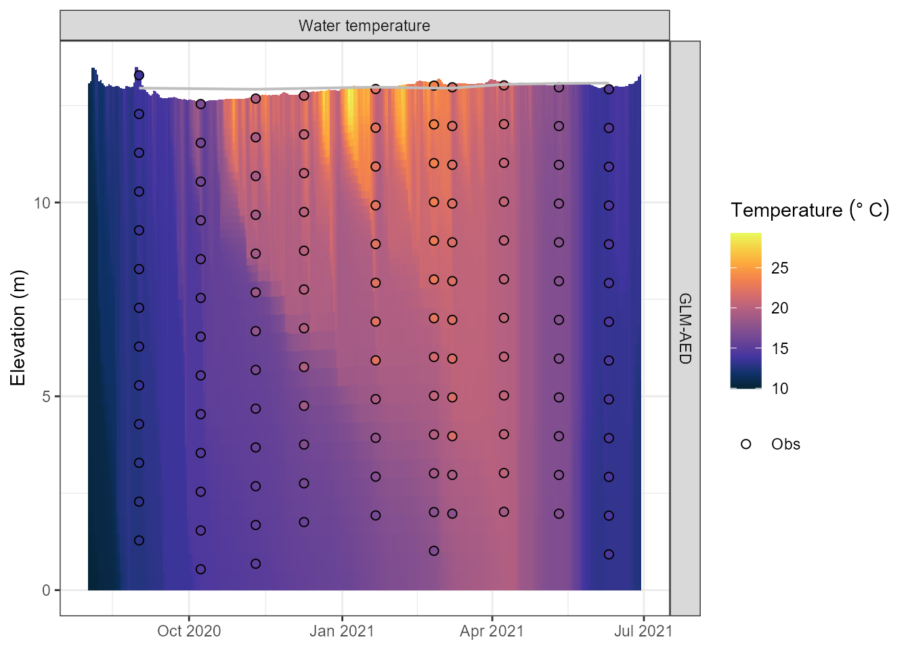
Simulated water temperature (°C) at each model layer over time.
Water quality variables
Any variable that was listed in vars_sim and is present
in the output can be plotted the same way:
plot_output(aeme = aeme, var_sim = "CHM_oxy")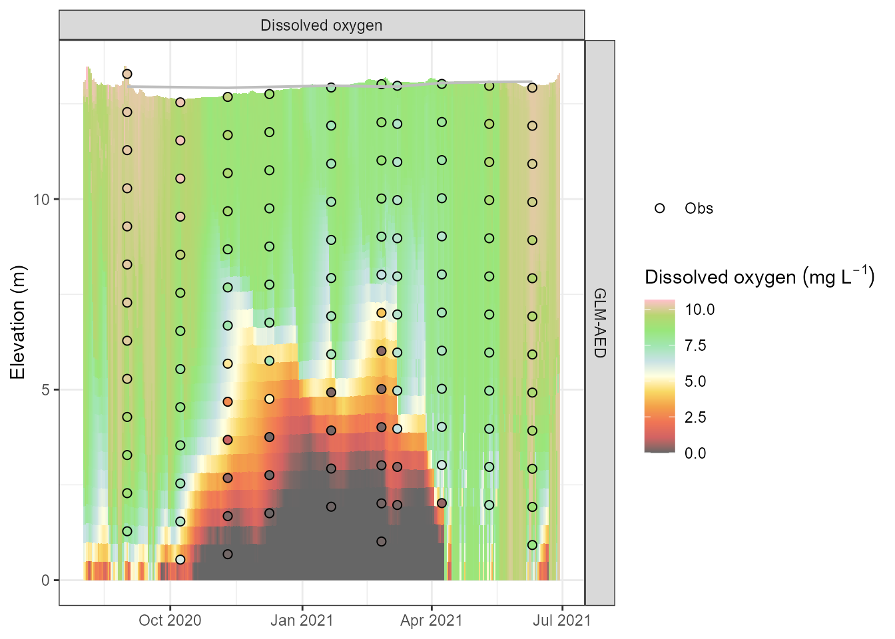
Simulated dissolved oxygen (mmol O2 m⁻³) profiles.
plot_output(aeme = aeme, var_sim = "PHY_tchla")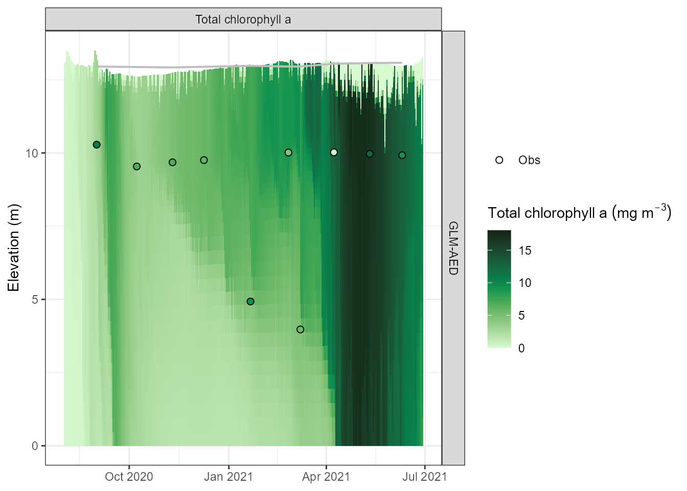
Simulated total chlorophyll-a (µg L⁻¹) time series.
Assessing model performance
When observations are stored in the aeme object,
assess_model() computes a suite of skill metrics (RMSE,
NSE, bias, Pearson r, etc.) for each simulated variable:
skill <- assess_model(aeme = aeme, model = model)
skill
#> Model var_sim bias mae rmse nmae nse d2 r
#> 1 GLM-AED CHM_oxyepi 0.455 0.864 0.911 0.107 0.368 0.313 0.898
#> 2 GLM-AED CHM_oxymet 2.088 2.279 3.083 0.530 -0.065 0.215 0.661
#> 3 GLM-AED CHM_oxymom 0.942 1.475 2.357 -3.629 -0.610 0.295 0.041
#> 4 GLM-AED HYD_epidep -2.313 2.775 4.023 0.407 -3.353 0.486 0.038
#> 5 GLM-AED HYD_hypdep -3.263 3.263 4.481 0.344 -2.082 0.351 0.362
#> 6 GLM-AED LKE_tli3 1.154 1.154 1.332 0.334 -7.042 0.590 -0.464
#> 7 GLM-AED LKE_tli4 0.765 0.772 0.978 0.209 -4.061 0.490 -0.552
#> 8 GLM-AED CAR_doc -2.667 2.667 2.710 0.981 -32.131 0.762 -0.164
#> 9 GLM-AED HYD_ctrbuy -1.248 1.742 2.080 0.270 -0.058 0.304 0.662
#> 10 GLM-AED HYD_schstb -6.581 31.073 39.998 0.489 0.430 0.277 0.697
#> 11 GLM-AED HYD_strat 0.100 0.100 0.316 0.143 0.524 0.033 0.764
#> 12 GLM-AED HYD_thmcln -2.700 3.008 4.371 0.313 -1.190 0.311 0.522
#> 13 GLM-AED PHY_cyano -0.015 0.042 0.068 1.111 -0.547 0.390 -0.240
#> 14 GLM-AED PHY_tchla 0.575 4.339 5.497 0.600 -1.792 1.328 0.081
#> 15 GLM-AED NIT_amm 0.002 0.017 0.044 1.420 -4.312 0.658 0.806
#> 16 GLM-AED NIT_nit 3.969 3.969 3.996 2480.572 -4157513.665 1.000 0.239
#> 17 GLM-AED NIT_tn 3.896 3.896 3.925 20.560 -21068.965 0.989 0.042
#> 18 GLM-AED PHS_frp 0.001 0.003 0.006 1.561 -41.720 2.365 0.676
#> 19 GLM-AED PHS_tp -0.002 0.005 0.006 0.398 -0.195 0.387 0.645
#> 20 GLM-AED CHM_oxycln 0.358 1.683 2.462 0.194 0.087 0.339 0.612
#> 21 GLM-AED CHM_oxynal 1.600 1.600 2.490 0.296 0.735 0.064 0.979
#> 22 GLM-AED CHM_oxy 0.377 0.933 1.298 0.135 0.835 0.072 0.923
#> 23 GLM-AED CHM_salt -0.117 0.117 0.117 0.999 -328.602 0.914 0.592
#> 24 GLM-AED HYD_temp -0.520 0.817 1.077 0.045 0.880 0.052 0.953
#> rs r2 B n obs_na sim_na name_text
#> 1 0.929 0.807 0.495 7 0 0 Epilimnetic oxygen
#> 2 0.750 0.436 0.211 7 0 0 Metalimnetic oygen
#> 3 -0.036 0.002 0.001 7 0 0 Metalimnetic oxygen minima
#> 4 0.143 0.001 0.000 7 0 0 Epilimnion depth
#> 5 0.334 0.131 0.032 7 0 0 Hypolimnion depth
#> 6 -0.548 0.215 0.024 8 0 0 Trophic Level Index 3
#> 7 -0.667 0.305 0.050 8 0 0 Trophic Level Index 4
#> 8 -0.206 0.027 0.001 10 0 0 Dissolved organic carbon
#> 9 0.564 0.438 0.213 10 0 0 Centre of buoyancy
#> 10 0.794 0.486 0.310 10 0 0 Schmidt stability
#> 11 0.764 0.583 0.395 10 0 0 Stratified
#> 12 0.437 0.273 0.085 10 0 0 Thermocline depth
#> 13 -0.104 0.057 0.023 10 0 0 Cyanobacteria
#> 14 -0.164 0.007 0.002 10 0 0 Total chlorophyll a
#> 15 0.731 0.649 0.103 20 0 0 Ammoniacal nitrogen
#> 16 0.278 0.057 0.000 20 0 0 Nitrate
#> 17 -0.029 0.002 0.000 20 0 0 Total nitrogen
#> 18 0.533 0.457 0.010 20 0 0 Phosphate
#> 19 0.573 0.416 0.189 20 0 0 Total phosphorus
#> 20 0.779 0.375 0.196 30 0 0 Oxycline depth
#> 21 0.958 0.958 0.758 30 0 0 Number of anoxic layers
#> 22 0.927 0.852 0.731 125 0 0 Dissolved oxygen
#> 23 0.670 0.351 0.001 125 0 0 Salinity
#> 24 0.946 0.908 0.811 125 0 0 Water temperature
#> name_parse
#> 1 Epilimnetic~oxygen~(mg~L^-1)
#> 2 Metalimnetic~oxygen~(mg~L^-1)
#> 3 Metalimnetic~oxygen~minima~(mg~L^-1)
#> 4 Epilimnion~depth~(m)
#> 5 Hypolimnion~depth~(m)
#> 6 Trophic~Level~Index~3
#> 7 Trophic~Level~Index~4
#> 8 Dissolved~organic~carbon~(g~m^-3)
#> 9 Centre~of~buoyancy~(m)
#> 10 Schmidt~stability~(J~m^2)
#> 11 Stratified~(1)
#> 12 Thermocline~depth~(m)
#> 13 Cyanophytes~(mg~chla~m^-3)
#> 14 Total~chlorophyll~a~(mg~m^-3)
#> 15 Ammoniacal~nitrogen~(g~m^-3)
#> 16 Nitrate-N~(g~m^-3)
#> 17 Total~nitrogen~(g~m^-3)
#> 18 Phosphate-P~(g~m^-3)
#> 19 Total~phosphorus~(g~m^-3)
#> 20 Oxycline~depth~(m)
#> 21 Number~of~anoxic~layers
#> 22 Dissolved~oxygen~(mg~L^-1)
#> 23 Salinity~(PSU)
#> 24 Temperature~(degree~C)GLM-AED diagnostics
Comprehensive diagnostic report
run_glm_aed_diagnostics() reads the model output and
produces a structured diagnostic report — a summary table and a set of
grouped plots — that helps you quickly identify unrealistic values or
mass-balance issues:
diag <- run_glm_aed_diagnostics(
aeme = aeme,
plot = TRUE,
print_table = TRUE
)
#>
#> === GLM-AED diagnostic summary ===
#> All diagnostics within expected ranges.
#>
#> -- Full summary --
#>
#>
#> |group |variable |label | min| median| mean| max| sd|flag |
#> |:------------------------|:---------------|:---------------------------|--------:|-------:|-------:|-------:|------:|:----|
#> |oxygen_state |OXY_oxy |O2 (mmol/m3) | 176.440| 233.954| 240.063| 322.493| 44.083|ok |
#> |oxygen_state |OXY_sat |O2 saturation (%) | 49.563| 73.786| 75.480| 95.740| 8.434|ok |
#> |oxygen_fluxes |OXY_oxy_atm |Atm O2 flux (mmol/m2/d) | -13.006| 11.659| 25.823| 427.040| 44.894|ok |
#> |oxygen_fluxes |OXY_oxy_atmv |Atm O2 flux (vol) | -1.589| 0.873| 2.549| 55.748| 5.599|ok |
#> |oxygen_fluxes |OXY_oxy_dsf |SWI O2 flux (mmol/m2/d) | -22.234| -14.169| -14.592| -9.977| 2.418|ok |
#> |oxygen_fluxes |OXY_oxy_dsfv |SOD (vol) | -3.224| -1.901| -1.944| -1.337| 0.385|ok |
#> |nitrogen_state |NIT_amm |NH4 (mmol N/m3) | 0.000| 0.004| 0.024| 0.113| 0.033|ok |
#> |nitrogen_state |NIT_n2o |N2O (mmol N/m3) | 0.011| 0.054| 0.254| 1.107| 0.336|ok |
#> |nitrogen_state |NIT_nit |NO3 (mmol N/m3) | 2.422| 3.888| 3.781| 4.540| 0.445|ok |
#> |nitrogen_state |NIT_no2 |NO2 (mmol N/m3) | 0.000| 0.014| 0.038| 0.141| 0.044|ok |
#> |nitrogen_organic |OGM_don |DON (mmol N/m3) | 0.371| 0.881| 2.460| 21.164| 3.853|ok |
#> |nitrogen_organic |OGM_donr |Refractory DON | 0.529| 1.319| 1.791| 8.946| 1.535|ok |
#> |nitrogen_organic |OGM_pon |PON (mmol N/m3) | 2.648| 3.228| 3.431| 7.086| 0.670|ok |
#> |nitrogen_transformations |NIT_anammox |Anammox | 0.000| 0.000| 0.001| 0.005| 0.001|ok |
#> |nitrogen_transformations |NIT_denit |Denitrification | 0.000| 0.000| 0.000| 0.000| 0.000|ok |
#> |nitrogen_transformations |NIT_dnra |DNRA | 0.000| 0.000| 0.000| 0.000| 0.000|ok |
#> |nitrogen_transformations |NIT_n2oprod |N2O production | 0.000| 0.002| 0.007| 0.063| 0.012|ok |
#> |nitrogen_transformations |NIT_nitrif |Nitrification | 0.000| 0.069| 0.111| 0.930| 0.155|ok |
#> |nitrogen_sediment_flux |NIT_amm_dsf |NH4 SWI flux | 0.135| 0.535| 0.701| 1.531| 0.515|ok |
#> |nitrogen_sediment_flux |NIT_n2o_atm |N2O atm flux | 0.000| 0.003| 0.018| 0.780| 0.061|ok |
#> |nitrogen_sediment_flux |NIT_n2o_dsf |N2O SWI flux | 0.000| 0.000| 0.000| 0.000| 0.000|ok |
#> |nitrogen_sediment_flux |NIT_nit_dsf |NO3 SWI flux | -0.032| 0.003| 0.011| 0.055| 0.030|ok |
#> |nitrogen_sediment_flux |NIT_no2_dsf |NO2 SWI flux | 0.000| 0.000| 0.000| 0.000| 0.000|ok |
#> |phosphorus_state |OGM_dop |DOP | 0.004| 0.012| 0.036| 0.319| 0.058|ok |
#> |phosphorus_state |OGM_dopr |Refractory DOP | 0.009| 0.022| 0.030| 0.149| 0.026|ok |
#> |phosphorus_state |OGM_pop |POP | 0.087| 0.111| 0.125| 0.321| 0.036|ok |
#> |phosphorus_state |PHS_frp |FRP (mmol P/m3) | 0.000| 0.001| 0.002| 0.010| 0.002|ok |
#> |phosphorus_fluxes |OGM_dop_min |DOP mineralisation | 0.000| 0.000| 0.000| 0.002| 0.000|ok |
#> |phosphorus_fluxes |OGM_dop_swi |DOP SWI flux | 0.000| 0.000| 0.000| 0.000| 0.000|ok |
#> |phosphorus_fluxes |OGM_pop_res |POP resuspension | 0.000| 0.000| 0.000| 0.000| 0.000|ok |
#> |phosphorus_fluxes |OGM_pop_swi |POP SWI flux | -0.093| -0.029| -0.032| -0.022| 0.010|ok |
#> |phosphorus_fluxes |PHS_frp_dsf |FRP SWI flux | 0.001| 0.003| 0.008| 0.025| 0.009|ok |
#> |phyto_biomass |PHY_cyano |Cyanobacteria | 0.030| 0.031| 0.112| 0.503| 0.136|ok |
#> |phyto_biomass |PHY_diatom |Diatoms | 0.030| 0.030| 1.620| 19.736| 4.012|ok |
#> |phyto_biomass |PHY_green |Greens | 0.305| 19.342| 22.936| 57.146| 17.098|ok |
#> |phyto_biomass |PHY_tchla |Total chl-a (ug/L) | 0.235| 6.113| 6.943| 17.076| 4.193|ok |
#> |phyto_biomass |PHY_tphy |Total phyto (mmol C/m3) | 0.832| 20.383| 23.166| 56.925| 13.965|ok |
#> |phyto_stoichiometry |PHY_cyano_NtoP |Cyano N:P | 12.900| 48.237| 45.336| 70.931| 14.585|ok |
#> |phyto_stoichiometry |PHY_diatom_NtoP |Diatom N:P | 12.844| 53.387| 48.830| 70.944| 14.850|ok |
#> |phyto_stoichiometry |PHY_green_NtoP |Green N:P | 12.960| 44.844| 42.091| 66.730| 13.192|ok |
#> |phyto_limitation |PHY_cyano_fI |Cyano fI | 0.019| 0.242| 0.232| 0.328| 0.060|ok |
#> |phyto_limitation |PHY_cyano_fNit |Cyano fN | 0.631| 0.987| 0.952| 0.997| 0.057|ok |
#> |phyto_limitation |PHY_cyano_fPho |Cyano fP | 0.000| 0.245| 0.317| 0.997| 0.294|ok |
#> |phyto_limitation |PHY_cyano_fT |Cyano fT | 0.437| 0.852| 0.827| 1.058| 0.156|ok |
#> |phyto_limitation |PHY_diatom_fI |Diatom fI | 0.044| 0.319| 0.308| 0.407| 0.064|ok |
#> |phyto_limitation |PHY_diatom_fNit |Diatom fN | 0.632| 0.978| 0.949| 0.997| 0.056|ok |
#> |phyto_limitation |PHY_diatom_fPho |Diatom fP | 0.000| 0.160| 0.248| 0.993| 0.295|ok |
#> |phyto_limitation |PHY_diatom_fT |Diatom fT | 0.638| 1.000| 0.960| 1.000| 0.057|ok |
#> |phyto_limitation |PHY_green_fI |Green fI | 0.019| 0.242| 0.232| 0.328| 0.060|ok |
#> |phyto_limitation |PHY_green_fNit |Green fN | 0.638| 0.991| 0.956| 1.000| 0.056|ok |
#> |phyto_limitation |PHY_green_fPho |Green fP | 0.039| 0.421| 0.442| 0.998| 0.261|ok |
#> |phyto_limitation |PHY_green_fT |Green fT | 0.638| 1.000| 0.960| 1.000| 0.057|ok |
#> |phyto_fluxes |PHY_gpp |GPP | 0.122| 0.990| 1.460| 7.170| 1.262|ok |
#> |phyto_fluxes |PHY_ncp |NCP | -0.056| 0.839| 1.241| 6.336| 1.156|ok |
#> |phyto_fluxes |PHY_set |Sedimentation | -13.902| -0.862| -1.634| -0.194| 2.294|ok |
#> |phyto_fluxes |PHY_upt_nh4 |NH4 uptake | 0.006| 0.038| 0.057| 0.285| 0.049|ok |
#> |phyto_fluxes |PHY_upt_no3 |NO3 uptake | 0.000| 0.000| 0.000| 0.000| 0.000|ok |
#> |phyto_fluxes |PHY_upt_po4 |PO4 uptake | 0.000| 0.000| 0.001| 0.011| 0.002|ok |
#> |sedflux_oxygen_Z |OXY_oxy_atm_Z |Atm O2 flux (per zone) | 0.000| 0.000| 0.000| 0.000| 0.000|ok |
#> |sedflux_oxygen_Z |OXY_oxy_dsf_Z |SWI O2 exchange (per zone) | -34.692| -15.603| -14.732| -0.009| 7.081|ok |
#> |sedflux_oxygen_Z |SDF_Fsed_oxy_Z |SDF O2 flux (per zone) | -38.800| -29.100| -29.100| -19.400| 9.707|ok |
#> |sedflux_nitrogen_Z |NIT_amm_dsf_Z |NH4 SWI flux (per zone) | 0.034| 0.249| 1.177| 5.198| 1.670|ok |
#> |sedflux_nitrogen_Z |NIT_n2o_atm_Z |N2O atm flux (per zone) | 0.000| 0.000| 0.000| 0.000| 0.000|ok |
#> |sedflux_nitrogen_Z |NIT_n2o_dsf_Z |N2O SWI flux (per zone) | 0.000| 0.000| 0.000| 0.000| 0.000|ok |
#> |sedflux_nitrogen_Z |NIT_nit_dsf_Z |NO3 SWI flux (per zone) | -0.305| 0.018| -0.029| 0.079| 0.113|ok |
#> |sedflux_nitrogen_Z |NIT_no2_dsf_Z |NO2 SWI flux (per zone) | 0.000| 0.000| 0.000| 0.000| 0.000|ok |
#> |sedflux_nitrogen_Z |SDF_Fsed_amm_Z |SDF NH4 flux (per zone) | 0.512| 3.173| 3.173| 5.835| 2.663|ok |
#> |sedflux_nitrogen_Z |SDF_Fsed_nit_Z |SDF NO3 flux (per zone) | -0.400| -0.150| -0.150| 0.100| 0.250|ok |
#> |sedflux_phosphorus_Z |OGM_doc_swi_Z |DOC SWI flux (per zone) | 0.014| 0.028| 0.037| 0.093| 0.024|ok |
#> |sedflux_phosphorus_Z |OGM_don_swi_Z |DON SWI flux (per zone) | 0.000| 0.000| 0.000| 0.000| 0.000|ok |
#> |sedflux_phosphorus_Z |OGM_dop_swi_Z |DOP SWI flux (per zone) | 0.000| 0.000| 0.000| 0.000| 0.000|ok |
#> |sedflux_phosphorus_Z |OGM_poc_swi_Z |POC SWI flux (per zone) | -10.369| -3.143| -4.255| -0.904| 2.399|ok |
#> |sedflux_phosphorus_Z |OGM_pon_swi_Z |PON SWI flux (per zone) | -2.576| -0.788| -0.718| -0.258| 0.393|ok |
#> |sedflux_phosphorus_Z |OGM_pop_swi_Z |POP SWI flux (per zone) | -0.117| -0.030| -0.026| -0.008| 0.015|ok |
#> |sedflux_phosphorus_Z |PHS_frp_dsf_Z |FRP SWI flux (per zone) | 0.000| 0.001| 0.013| 0.089| 0.025|ok |
#> |sedflux_phosphorus_Z |SDF_Fsed_frp_Z |SDF FRP flux (per zone) | 0.026| 0.065| 0.065| 0.104| 0.039|ok |
#> |sedflux_organic_Z |OGM_poc_res_Z |POC resuspension (per zone) | 0.000| 0.000| 0.000| 0.000| 0.000|ok |
#> |sedflux_organic_Z |OGM_pon_res_Z |PON resuspension (per zone) | 0.000| 0.000| 0.000| 0.000| 0.000|ok |
#> |sedflux_organic_Z |OGM_pop_res_Z |POP resuspension (per zone) | 0.000| 0.000| 0.000| 0.000| 0.000|ok |
#> |sedflux_organic_Z |OGM_toc_sed_Z |TOC sed mass (per zone) | 0.000| 0.000| 0.000| 0.000| 0.000|ok |
#> |sedflux_organic_Z |OGM_ton_sed_Z |TON sed mass (per zone) | 0.000| 0.000| 0.000| 0.000| 0.000|ok |
#> |sedflux_organic_Z |OGM_top_sed_Z |TOP sed mass (per zone) | 0.000| 0.000| 0.000| 0.000| 0.000|ok |
#> |sedflux_organic_Z |PHY_phy_swi_c_Z |Phyto SWI C (per zone) | -138.858| -5.458| -10.669| -0.512| 18.342|ok |
#> |sedflux_organic_Z |PHY_phy_swi_n_Z |Phyto SWI N (per zone) | -9.385| -0.380| -0.734| -0.036| 1.243|ok |
#> |sedflux_organic_Z |PHY_phy_swi_p_Z |Phyto SWI P (per zone) | -0.339| -0.009| -0.023| -0.003| 0.045|ok |
#> |sedflux_silica_Z |SIL_dsf_rsi_Z |Si SWI flux (per zone) | 0.002| 0.004| 0.075| 0.913| 0.191|ok |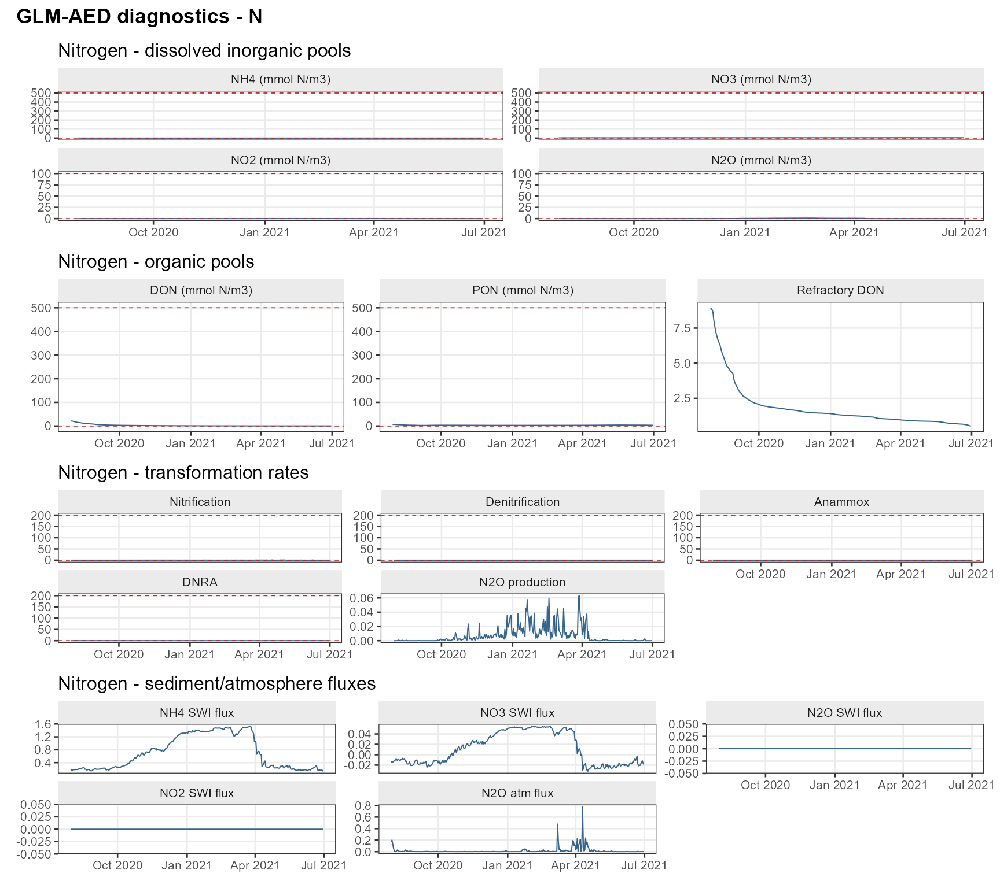
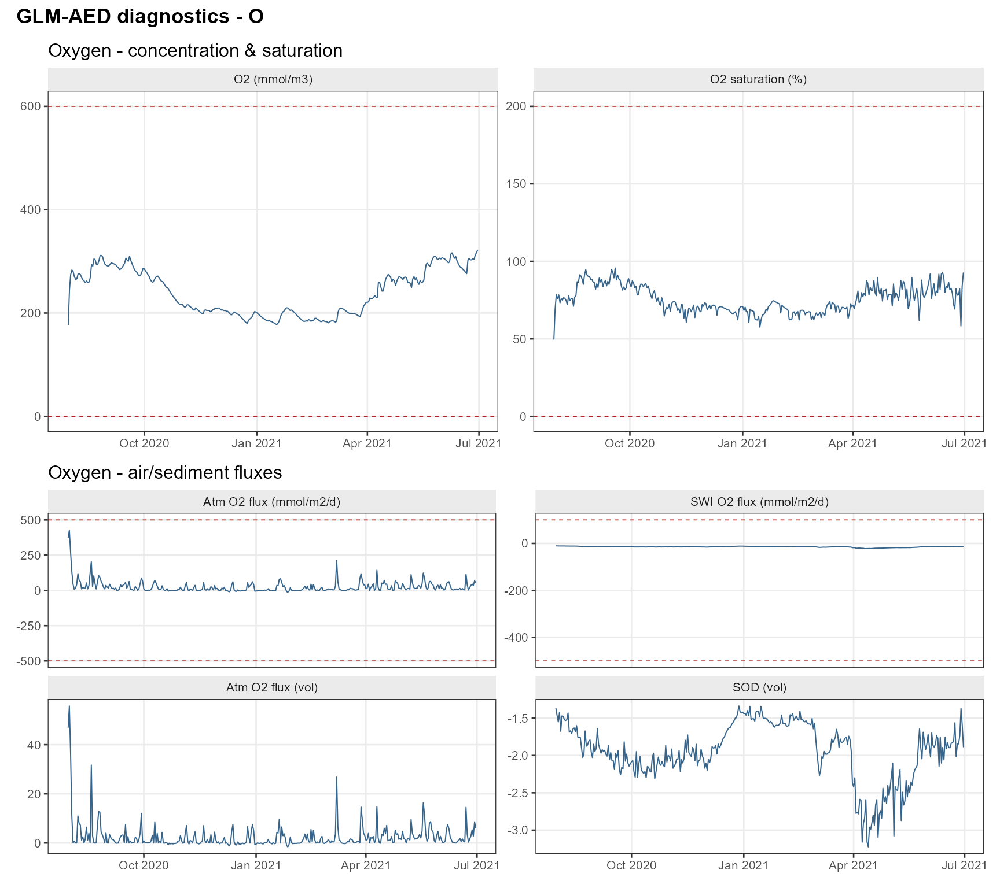
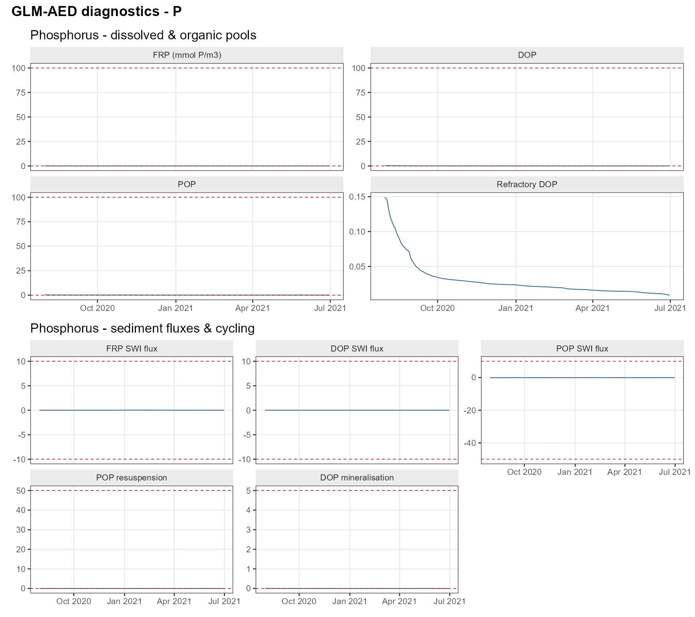
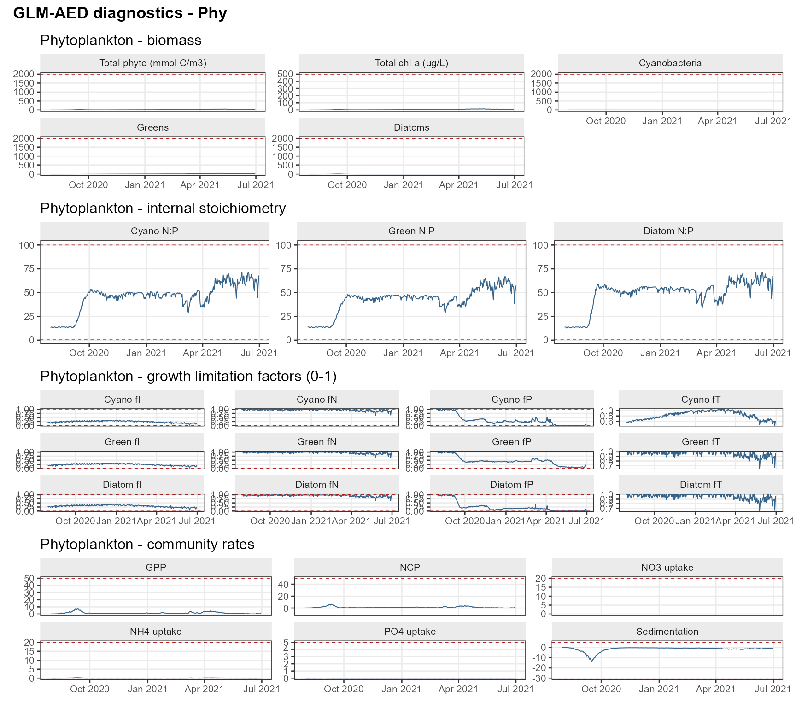
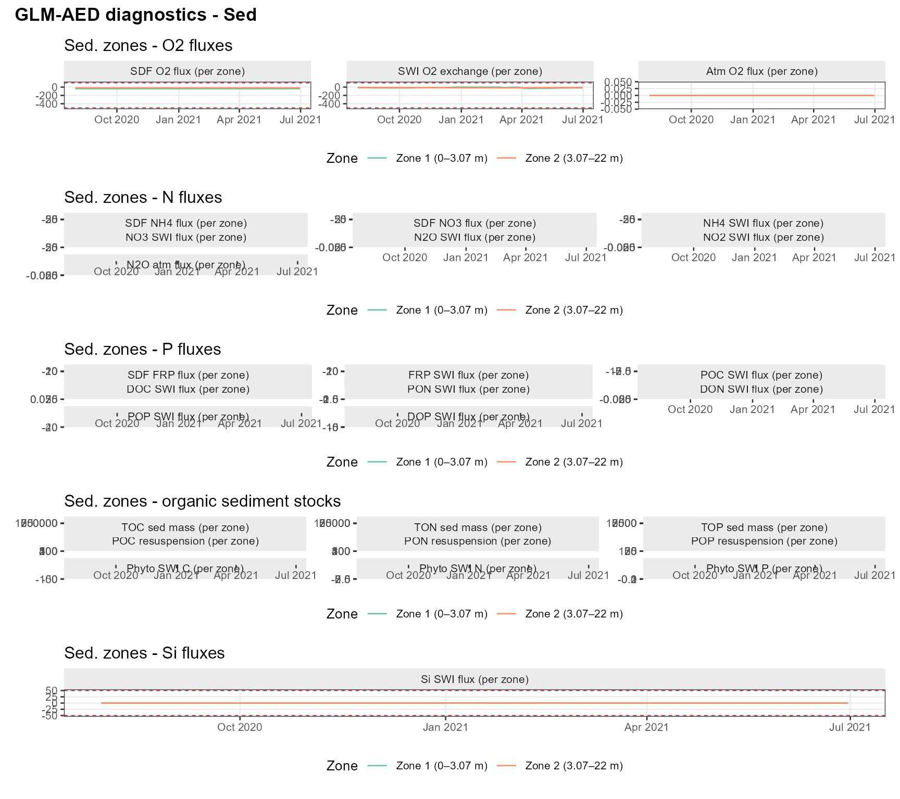
The function returns a list with three components:
-
$summary— a data frame with min, median, mean, max, and aflagcolumn ("ok"or a warning string) for each variable. -
$plots— a named list ofpatchworkplot objects grouped by biogeochemical element (O,N,P,Phy,Sed). -
$data— the tidy data frame used to produce the plots.
You can filter the diagnostics to a specific element or type:
# Nitrogen state variables only
diag_N <- run_glm_aed_diagnostics(
aeme = aeme,
groups = "N",
plot = TRUE,
print_table = FALSE
)
# Process-rate variables only
diag_proc <- run_glm_aed_diagnostics(
aeme = aeme,
groups = "process",
plot = FALSE,
print_table = TRUE
)Oxygen diagnostic page
plot_glm_diagnostics() provides a focused four-page
diagnostic panel specifically designed to debug anomalous dissolved
oxygen behaviour — a common challenge when coupling hydrodynamics with
biogeochemistry:
pages <- plot_glm_diagnostics(aeme = aeme)
# Page 1: oxygen state and key physical drivers
print(pages$oxy)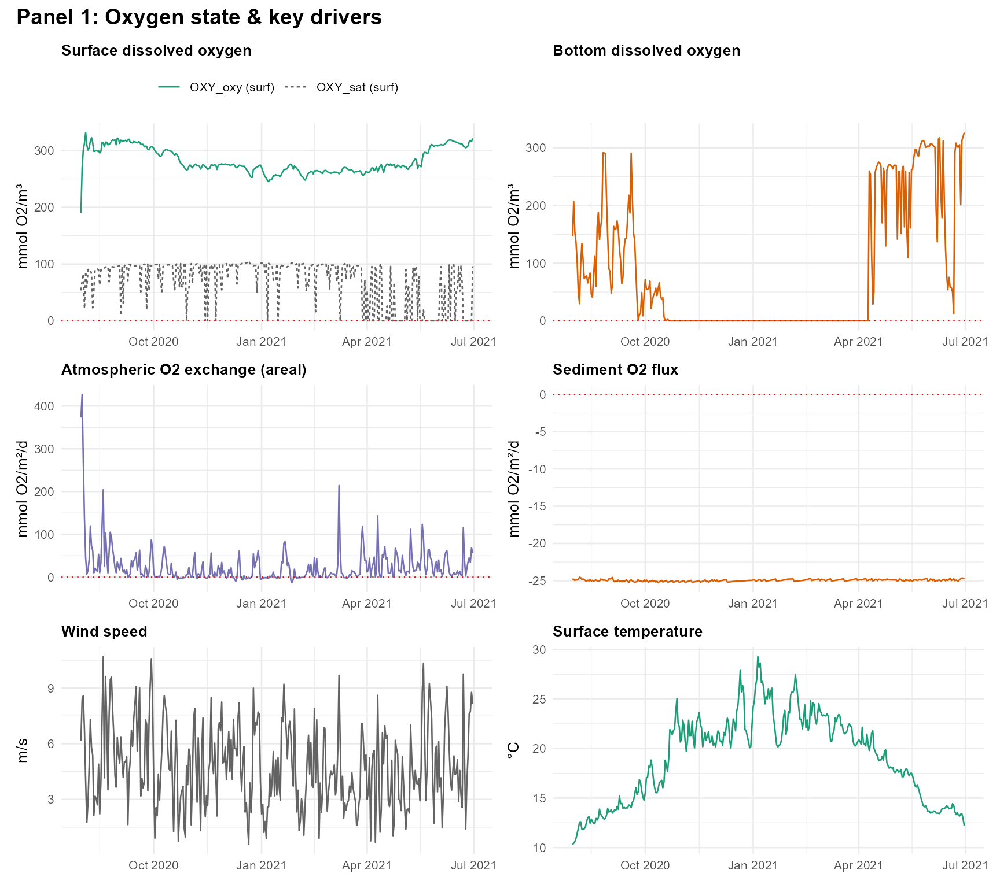
# Page 2: mixing and physical structure
print(pages$physical)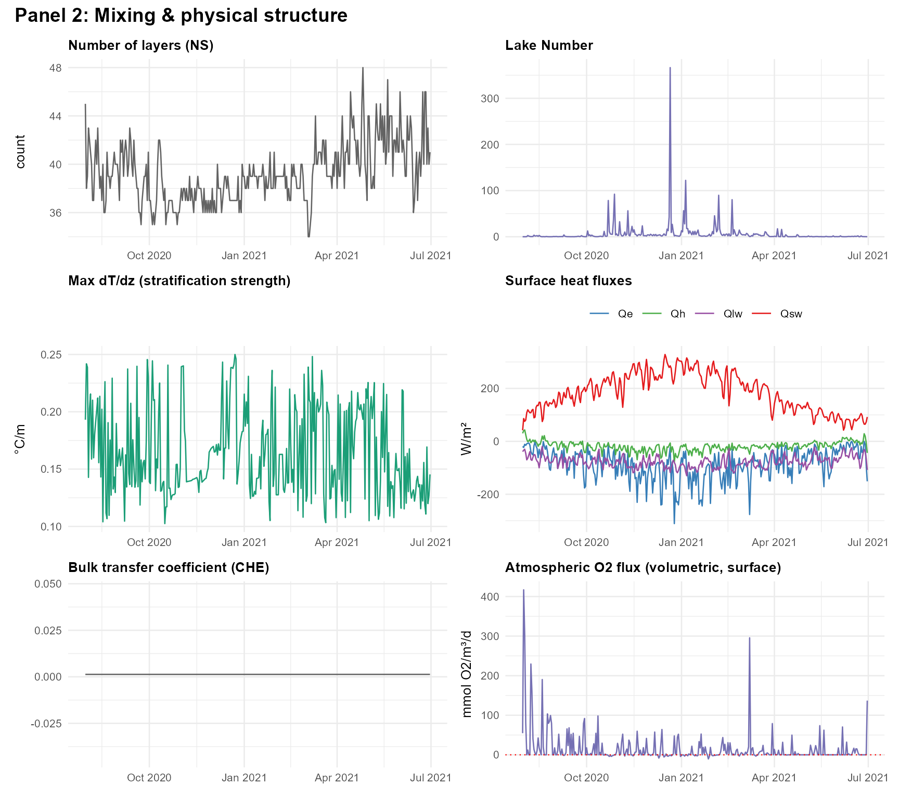
# Page 3: biological oxygen demand
print(pages$bod)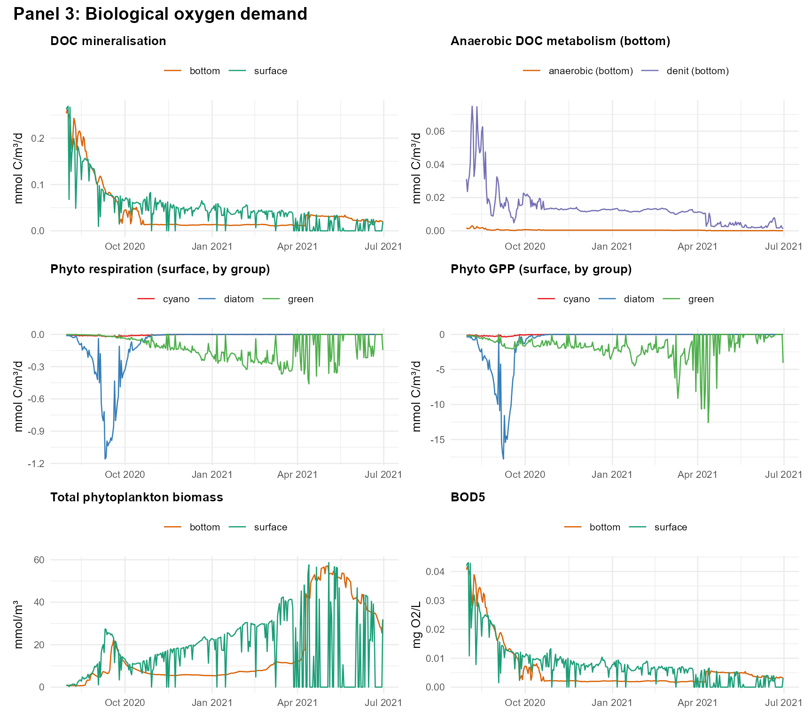
# Page 4: sediment–water interface fluxes
print(pages$sediment)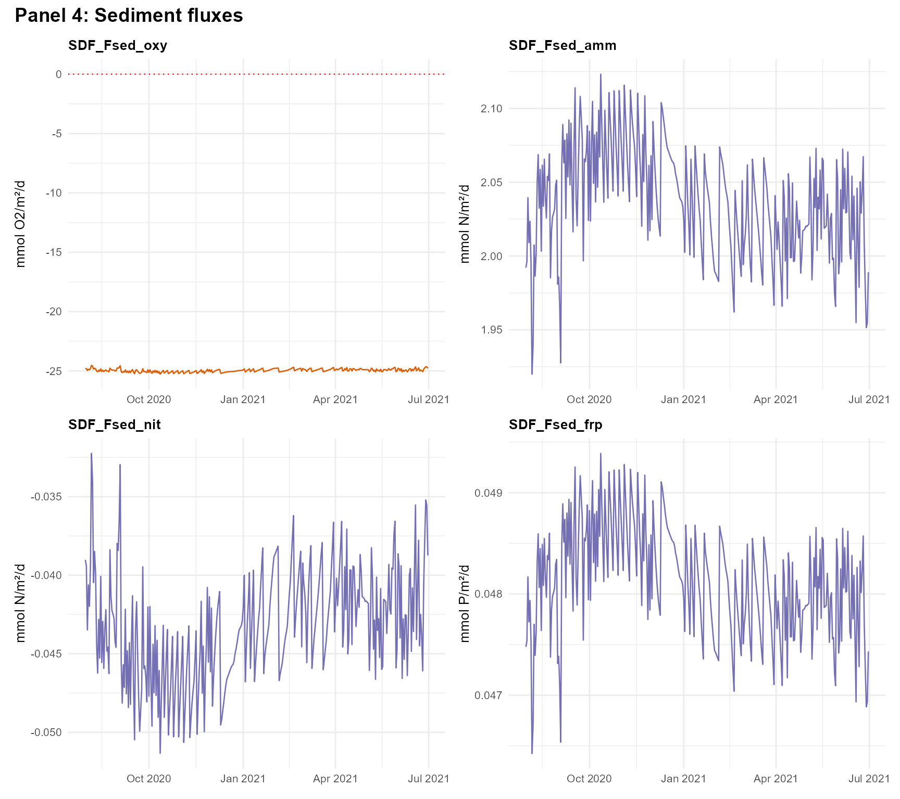
Working with the GLM configuration directly
The raw glm3.nml file and aed/aed.nml file
can be read, modified, and written using the NML helpers bundled with
AEME:
# Retrieve the parsed configuration
cfg <- read_model_config(model = "glm_aed",
lake_dir = get_lake_dir(aeme))
# Access GLM hydrodynamic section
glm_nml <- cfg$hydrodynamic
glm_nml$morphometry$lake_name
# Access AED biogeochemistry section
aed_nml <- cfg$bgc$aed
aed_nml$aed_nitrogen$rnitrif # nitrification rateRetrieving parameters by module
get_aeme_parameters() provides a convenient way to query
the AEME parameter library for all GLM-AED parameters belonging to a
particular module:
# All GLM-AED light parameters
light_params <- get_aeme_parameters(model = "glm_aed",
module = "light")
light_params[, c("name", "value", "min", "max")]
#> # A tibble: 6 × 4
#> name value min max
#> <chr> <dbl> <dbl> <dbl>
#> 1 light/light_mode 0 0 0
#> 2 light/n_bands 4 2 6
#> 3 light/light_extc 1 0.5 1.5
#> 4 light/energy_frac 0.51 0.255 0.765
#> 5 light/Benthic_Imin 10 5 15
#> 6 light/Kw 0.2 0.1 0.3
# AED nitrogen module parameters
n_params <- get_aeme_parameters(model = "glm_aed",
module = "nitrogen")
n_params[, c("name", "value", "min", "max")]
#> # A tibble: 62 × 4
#> name value min max
#> <chr> <dbl> <dbl> <dbl>
#> 1 aed2_nitrogen/theta_sed_amm 1.08 0.54 1.62
#> 2 aed2_nitrogen/Fsed_amm 30 15 45
#> 3 aed2_nitrogen/Ksed_amm 31.2 15.6 46.9
#> 4 aed2_nitrogen/Fsed_n2o 0 0 0
#> 5 aed2_nitrogen/Ksed_n2o 100 50 150
#> 6 aed2_nitrogen/theta_sed_nit 1.08 0.54 1.62
#> 7 aed2_nitrogen/Fsed_nit 5.2 2.6 7.8
#> 8 aed2_nitrogen/Ksed_nit 100 50 150
#> 9 aed2_nitrogen/Kpart_ammox 1 0.5 1.5
#> 10 aed2_nitrogen/Ranammox 0.001 0.0005 0.0015
#> # ℹ 52 more rowsSummary
This vignette demonstrated the key GLM-AED-specific features available in AEME:
Model description — GLM provides variable-layer 1-D hydrodynamics; AED supplies modular biogeochemistry ranging from simple oxygen dynamics through to full nutrient–phytoplankton food-web simulation.
Module selection —
set_glm_aed_models()lets you enable or disable individual AED modules to match the complexity and data requirements of your application.Sediment zones — The
estimate_sed_zones()→glm_sed_params()→set_aed_sed_const2d()workflow automatically derives depth-varying sediment parameters from the lake hypsograph and optional near-bed observations.Configuration visualisation —
plot_glm_config()provides an interactive overview of the model setup.Diagnostics —
run_glm_aed_diagnostics()andplot_glm_diagnostics()offer structured, automated checks for common biogeochemical issues (unrealistic concentrations, oxygen anomalies, excessive or negligible fluxes).Parameter access —
get_aeme_parameters()makes it easy to explore and modify individual model parameters for manual tuning or automated calibration (see the aemetools package).